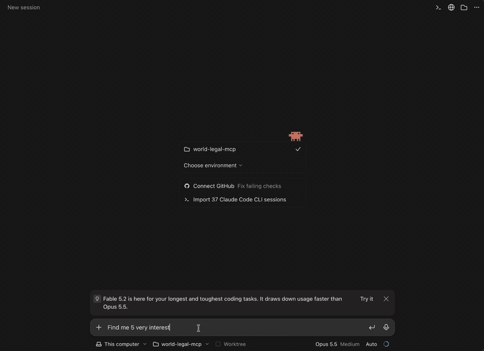

Case law and legislation for your AI app, read live from court and government websites.
Beta · free · open source · sources checked daily
Fontes is a free, open-source MCP server. It works in any app that can run a local Model Context Protocol server: Claude Desktop, Claude Code, Codex, Cursor, VS Code (GitHub Copilot), Gemini CLI, Windsurf, Zed, LM Studio and more. Ask a legal question in plain language: your AI app searches court decisions and legislation live on government and court websites, in 125 jurisdictions and international courts, and links each result to the original. It can also show a law as it stood on a past date, and read legislation from 91 more countries, from Lexifina's record (not the official publisher). It is made for lawyers and legal researchers, and for anyone who wants to read the law at its source.
Languages: English · አማርኛ · العربية · Aymar aru · azərbaycan · български · বাংলা · bosanski · босански · català · کوردیی ناوەندی · čeština · dansk · Deutsch · ދިވެހި · རྫོང་ཁ · Ελληνικά · español · eesti · فارسی · suomi · Filipino · français · Gaeilge · Avañeʼẽ · 臺灣客家語 · עברית · हिन्दी · hrvatski · Kreyòl ayisyen · magyar · հայերեն · Indonesia · íslenska · italiano · 日本語 · ქართული · ខ្មែរ · кыргызча · Lëtzebuergesch · ລາວ · lietuvių · latviešu · Malagasy · монгол · Melayu · Malti · မြန်မာ · 臺灣台語 · norsk bokmål · नेपाली · Nederlands · norsk nynorsk · polski · پښتو · português · português europeu · Runasimi · română · русский · Ikinyarwanda · slovenčina · slovenščina · shqip · српски · srpski · svenska · தமிழ் · тоҷикӣ · türkmen dili · Türkçe · اردو · o‘zbek · ўзбекча · Tiếng Việt · Wolof · Èdè Yorùbá · ⵜⴰⵎⴰⵣⵉⵖⵜ · 简体中文 · 繁體中文


What it does
- Searches case law and legislation at the moment you ask, from the publisher's own website or API.
- Every result names its source and links to it, so you can check the original.
- Fontes keeps no database and needs no account. Your questions go to the source being searched; for past versions of laws and for the 91 more countries (and India's Acts), they go to Lexifina's public service as well as, or instead of, the official site. Set
WLM_LEXIFINA=0to turn that off. Usage counts and bug reports are opt-in.
Fontes is a research aid, not legal advice, and using it does not create a lawyer–client relationship. It is provided as is, with no warranty (see the Apache 2.0 licence). Some sources are expressly unofficial versions, and each has its own terms of use; Fontes says so in its answers. Read the full decision or provision before you rely on it. Fontes is independent and not affiliated with any court, government or publisher.
Install
- Claude Desktop: download the Fontes
.mcpbfile from the latest release, double-click it, then click Install. - Codex:
codex mcp add fontes -- uvx fontes-mcp - Claude Code:
claude mcp add fontes -- uvx fontes-mcp - Cursor, VS Code, Gemini CLI, Zed, LM Studio, Cline and other apps: add Fontes to the app's MCP settings. Most take this entry; the installation guide has the file and snippet for each app.
{
"mcpServers": {
"fontes": { "command": "uvx", "args": ["fontes-mcp"] }
}
}uvx comes with uv. On macOS or Linux: curl -LsSf https://astral.sh/uv/install.sh | sh. On Windows (PowerShell): powershell -ExecutionPolicy ByPass -c "irm https://astral.sh/uv/install.ps1 | iex".
Then restart the app and ask: "Which jurisdictions can Fontes search?"
On a Mac or Windows PC, a one-click installer sets up Fontes in Claude Desktop, Codex, Claude Code, Cursor, VS Code, Windsurf, Gemini CLI, Zed, LM Studio and Cline, in each one on your computer, then offers to add your keys. Download the installer for your computer from the latest release and quit those apps before you run it. Details in the installation guide. Some sources need a free key: see KEYS.md.